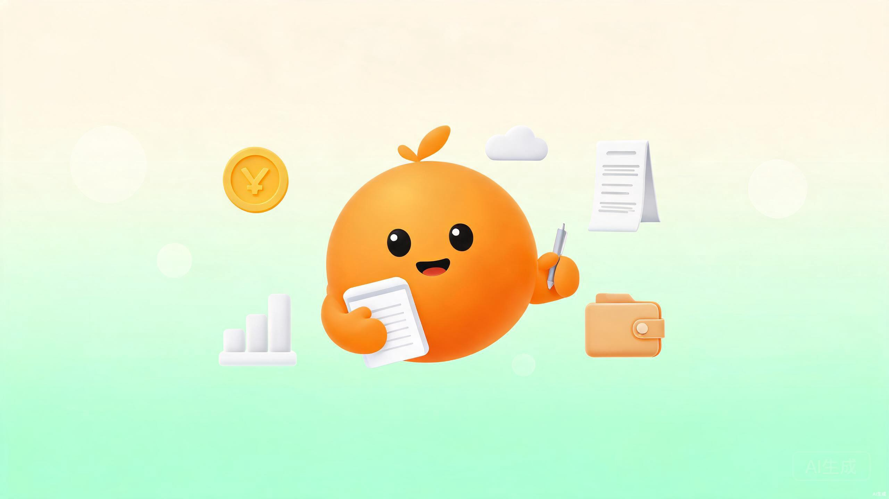
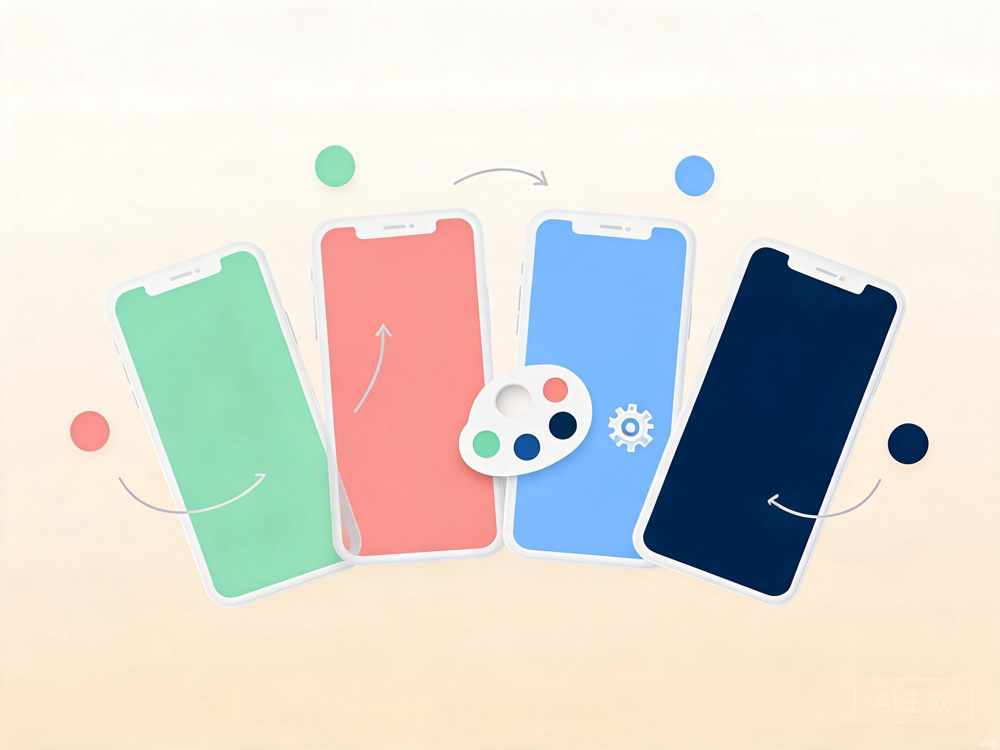
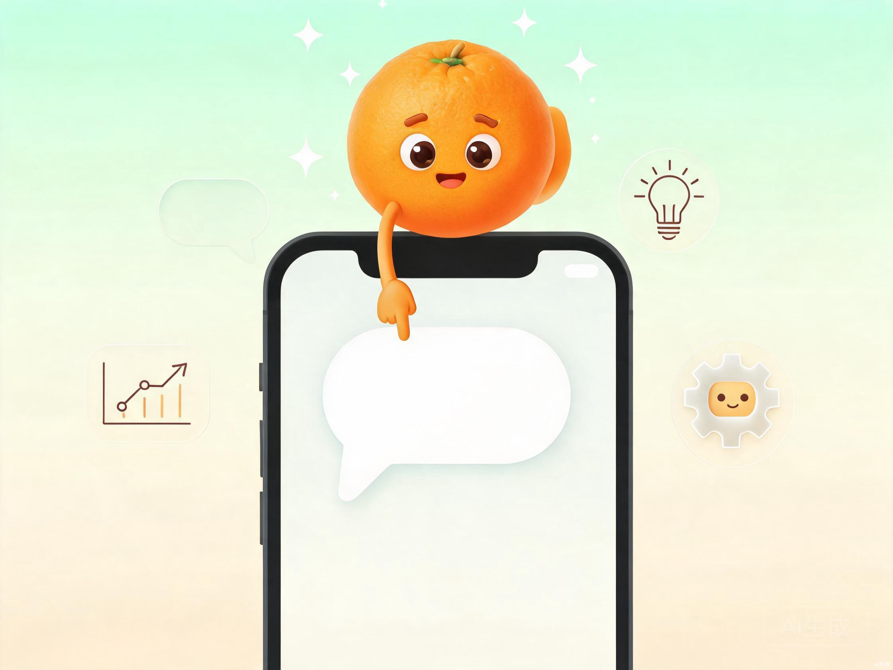

一个让人愿意坚持用的记账习惯养成工具。打开就记，记完就走，月底安心回顾。陪伴你的是 AI 助手「小橘」。

每一个认真生活的人，都值得被温柔对待。橘记的诞生，源于一个朴素的观察：大多数记账工具太"重"了。
在日常消费中，我们常常面临这样的困境：微信支付、支付宝、现金、信用卡……钱花出去了，却不知道去了哪里。市面上的记账应用功能越来越多，界面越来越复杂，录入一笔账单需要点击五六次，还没记完就已经放弃了。
更关键的是，传统记账工具给人的感觉是"冷冰冰的数字"——每到月底看到支出总额，焦虑感油然而生。记账本应是帮助我们更好地生活，而不是增加心理负担。
于是我们开始思考：能不能做一个"打开就记，记完就走"的轻量工具？能不能让记账这件事变得温暖一点、有趣一点？能不能有一个小伙伴，在你花钱的时候陪你聊两句，在月底的时候帮你复盘？
核心洞察：记账的最大敌人不是功能不够，而是"坚持不下去"。降低操作门槛、提供情绪价值，比堆砌功能更重要。
微信小程序天然具备"无需下载、扫码即用"的优势，用户不需要在手机上额外安装一个 App。对于记账这种"高频但短时"的场景，小程序的即用即走特性再合适不过。同时，微信生态提供了完善的云开发能力（CloudBase），个人开发者无需购买服务器、配置数据库，就能完成全栈开发。
微信内直接打开，无需下载安装，沉默成本几乎为零
CloudBase 提供数据库、云函数、云存储一体化方案
微信静默登录，一键获取 openid，无需注册流程
橘记的设计哲学可以浓缩为三个关键词：极简、温度、陪伴。
金额大字输入、分类网格一键选择、默认今天日期。核心路径不超过 3 次点击，3 秒完成一笔记录。
渐变 Hero 卡、Neumorphic 拟物阴影、手账风格详情页、季节标签点缀。让数字不再冰冷。
吉祥物「小橘」不只是装饰，它能聊天、能查账、能帮你从口语中提取账单，月底还会给你写一封信。
好的工具应该像空气一样——你感觉不到它的存在，但它一直在那里支持你。
橘记包含 10 个核心页面，覆盖记账、统计、预算、个人中心全流程。
| 页面 | 路径 | 核心功能 |
|---|---|---|
| 登录 | pages/login | 微信静默登录，漂浮图标动画 |
| 引导 | pages/guide | 4 页滑动新手引导，首次安装展示 |
| 首页 | pages/home | 渐变 Hero 卡、预算进度、按日分组流水、季节标签 |
| 统计 | pages/stats | 甜甜圈类目图、6 月趋势柱状图、AI 俏皮评论 |
| 记账 | pages/record | 大字金额、分类网格、心情、照片、小橘 AI 入口 |
| 预算 | pages/budget | 渐变进度环、6 月达成率、消费节奏卡、Top 3 分类 |
| 我的 | pages/profile | 头像编辑、记账足迹、AI 信件、数据导出/导入 |
| 分类管理 | pages/categories | 预设 + 自创分类 CRUD，emoji 图标池 |
| 主题 | pages/themes | 4 套预设 + 8 色调色板 + 用户命名主题（最多 5 个） |
| 账单详情 | pages/detail | 手账便签风格，拍立得照片框 + 心情印章 + 信纸备注 |
纯前端 + 云开发模式，无需自建服务器。客户端直读保证速度，云函数校验写入保证安全。
flowchart TB
subgraph Client["微信小程序前端"]
UI["WXML + WXSS + JS"]
Theme["Design Token 主题系统"]
Bus["EventBus 事件总线"]
Storage["wx.setStorageSync 本地缓存"]
end
subgraph Cloud["腾讯云 CloudBase"]
DB[("云数据库 NoSQL
bills / budgets / users")]
CF["云函数 Node.js
9 个函数"]
CS["云存储
照片/头像/CSV"]
AI["混元大模型
hunyuan-v3"]
end
UI -->|"wx.cloud.database()
直读"| DB
UI -->|"wx.cloud.callFunction()
写入校验"| CF
CF --> DB
CF --> CS
CF -->|"generateText"| AI
UI -->|"streamText 流式"| AI
UI --> CS
Theme --> Storage
Bus --> UI
| 函数名 | 运行时 | 职责 |
|---|---|---|
quickstartFunctions | Node.js 16.13 | 登录获取 openid，用户资料同步 |
bills | Node.js 16.13 | 账单 CRUD + 批量写入，服务端校验 |
budgets | Node.js 16.13 | 预算按月 upsert，服务端校验 |
aiPoster | Node.js 16.13 | AI 信件 + 每日消费称号，混元生成 |
aiChat | Node.js 16.13 | 小橘聊天 + 账单查询分析 + 对话记账解析 |
exportBills | Node.js 16.13 | CSV 导出到云存储 |
dataMigration | Node.js 16.13 | JSON 数据导出全部 / 分批导入（20 条/批） |
clearUserData | Node.js 16.13 | 清除用户账单/预算/文件，重置资料 |
contentSafety | Node.js 16.13 | 文本内容安全（本地正则 + msgSecCheck v2） |
| 集合 | 权限 | 关键字段 |
|---|---|---|
bills | 仅创建者可读写 | type, amount, category, date, note, photoUrl, mood, createdAt |
budgets | 仅创建者可读写 | month, amount, createdAt |
users | 仅创建者可读写 | nickname, avatarUrl, gender, customCategories, theme |
ai_usage_limits | 仅创建者可读写 | _openid, date, feature, count, limit |
client_logs | 仅创建者可读写 | type, message, stack, route, createdAt |
项目没有引入 Redux/MobX 等状态管理库，而是采用三层机制：
全局单例，存储 openid、userInfo、currentTheme、eventBus、编辑状态等
持久化本地存储，主题选择、引导标记、AI 缓存、每日限额
发布/订阅模式，跨页面通信，主要用于 themeChanged 主题热切换
数据流设计：读取走客户端 wx.cloud.database() 直连，减少云函数调用延迟；写入统一走 wx.cloud.callFunction()，在服务端完成类型校验、金额范围检查、内容安全过滤和所有权验证。
60+ Design Token 驱动的主题体系，4 套预设 + 8 色自定义调色板 + 用户命名主题，切换即时生效。

在小程序开发中，主题切换是一个经典难题。微信小程序的 page{} 中声明的 CSS 变量会在解析时被固化，不会响应子 view 的内联 style 覆盖。
橘记的解法是：在 JS 中计算所有衍生 token 的实际值，拼成字符串注入每页最外层 view 的 style 属性。渐变、阴影等复合 token 直接输出字面量值，绕过 CSS 变量的提前解析问题。
主色 #27C07D，搭配 #5BA4CB 跨色相 accent，清新自然，默认主题
主色 #785655，暖棕色调，搭配 #6A7855 橄榄绿 accent，温柔治愈
深色模式 #1E1E24 背景，#D4A574 暖金主色，护眼夜间体验
主色 #38BDF8 天空蓝，搭配 #7E69CF 鸢尾紫 accent，明亮开阔
| 类别 | Token 示例 | 说明 |
|---|---|---|
| 颜色 | --color-primary / --color-accent | 主色 + 互补色（HSL hue +60°） |
| 渐变 | --gradient-hero | 135deg 主色 → accent 跨色相渐变 |
| 阴影 | --shadow-card | Neumorphic 双侧高光 + 深影，per-theme |
| 圆角 | --radius-2xl (40rpx) | 5 级圆角，大圆角营造柔和感 |
| 字号 | --font-size-display (96rpx) | 8 级字号，数字专属字体族 |
| 字重 | --font-weight-black (800) | 5 级字重，核心数字用 Black |
橘记的卡片和按钮采用 Neumorphic（新拟物）风格，通过双侧阴影——左上高光、右下深影——营造柔和的立体感。每个主题的阴影色都不同：浅色主题用白色高光 + 主题色半透明深影，暗色主题用半透明白高光 + 黑色深影。
技术细节：自定义主题通过 HSL 色彩空间自动推导全套变量。输入一个 hex 主色，系统自动计算 container/light/accent（hue+60°）/surface 层级/text 对比度等 20+ 个颜色 token，确保任意颜色都能生成和谐可用的主题。
基于腾讯混元大模型（hunyuan-v3 / hy3-preview），橘记实现了四大 AI 能力，让记账不只是记录。

{intent, reply, bills}，容错解析 + temperature 0.2AI 资源：通过微信小程序成长计划获取 1 亿 Token 配额（pkg_hunyuan_token_la_inspire_100m），在 CloudBase 控制台开通混元大模型扩展能力即可使用。
从 2026 年 5 月首次部署到 8 月，橘记经历了 12+ 个版本迭代，从基础记账进化为 AI 驱动的智能记账工具。
open-type="agreePrivacyAuthorization" 按钮 + bindagreeprivacyauthorization 回调。用数据呈现橘记的规模与迭代节奏。
橘记不只是一个记账工具，它是一次"让技术有温度"的实践。
从前端 WXML/WXSS/JS 到云函数 Node.js，从数据库设计到 AI 集成，完整经历了小程序全栈开发流程
Design Token 体系、Neumorphic 风格、跨色相渐变、主题热切换——在约束中追求视觉品质
Prompt 工程、结构化输出、容错解析、确定性查库 + AI 生成混合架构、内容安全双层过滤
记账不是目的，好好生活才是。希望橘记能成为你生活里那个安静、温暖、偶尔调皮的小伙伴。